How a match works
A match is 10 rounds, like a short roll with a clock. Both players start standing. Each round you play one technique card, your opponent plays one, and the mat shows where you both end up.
Pick a style and a belt
Choose one of six fighting styles. Your belt decides which techniques are in your 20-card deck. You start with 7 cards in hand and draw one each round.
Play a card that fits
A card only works from the right position and the right side: you can't throw a scissor sweep from mount. While you hold a card, the mat lights up where it can go.
Roll for success, then for landing
Each technique has a success chance that changes with the position, your gas tank and your setups. If it works, a second roll decides where you land. A double leg usually ends in half guard, not side control, just like on the mat.
Manage your gas
Techniques cost stamina. Breathe to recover, Reset to get back to your feet. Hit zero and your attacks get sloppy. In the final minute, the fighter with more gas gets a bigger edge.
Shake it off
Stuck with a card that doesn't fit? Shake it off: send it to the bottom of the deck and draw a new one, up to twice per round.
Win the fight
Finish with a submission, or have more points when time runs out. Failed submissions have consequences too: miss an armbar and you may get stacked and passed.
Scoring (IBJJF style)
| Takedown Bring them to the ground | 2 |
| Sweep From bottom to top | 2 |
| Knee on belly | 2 |
| Pass Get past the guard | 3 |
| Mount | 4 |
| Back control | 4 |
| Submission Ends the match | Win |
The card types
- Takedown Wrestling and judo to get the fight down.
- Transition Guard pulls, guard entries and back takes that move you to a better spot.
- Sweep Reverse the position from the bottom.
- Pass Get past the legs and pin.
- Escape Get out from under mount, side control or the back.
- Submission Chokes, arm locks and, at higher belts, leg locks.
- Plus Defense and Utility cards like grip fighting, framing and posture.
Six ways to roll
Every deck is built around a real style of jiu-jitsu. Each one plays differently and has its own path to the finish.
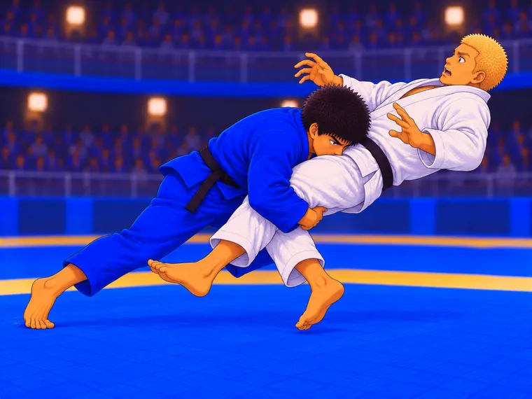
Wrestler
Shoots first and fights from the top. Takedowns, pressure and the back.
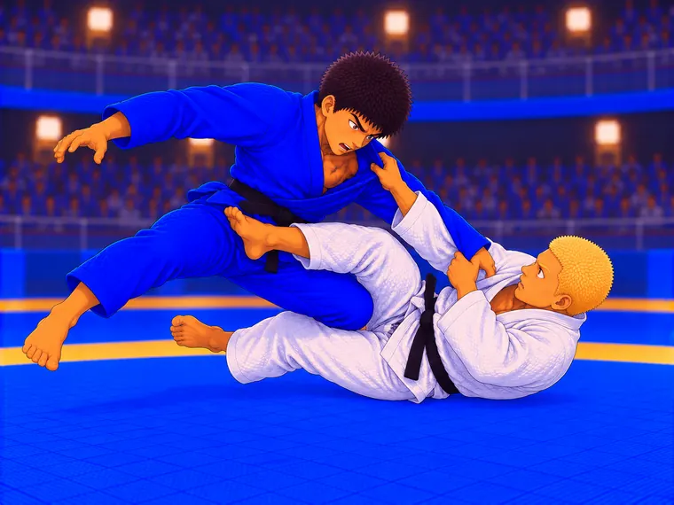
Closed Guard Player
Pulls guard, breaks posture and chains sweeps into armbars and triangles.
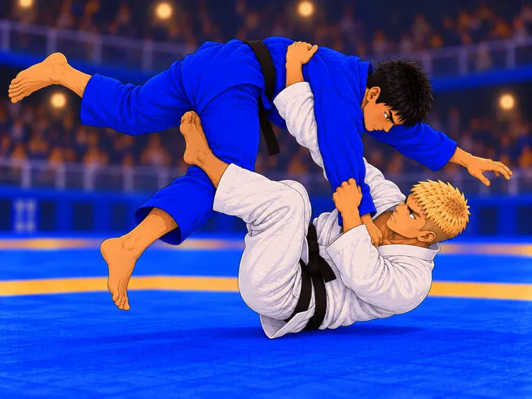
Open Guard Player
Butterfly, De La Riva, X guard: lots of guards, lots of ways to sweep and take the back.
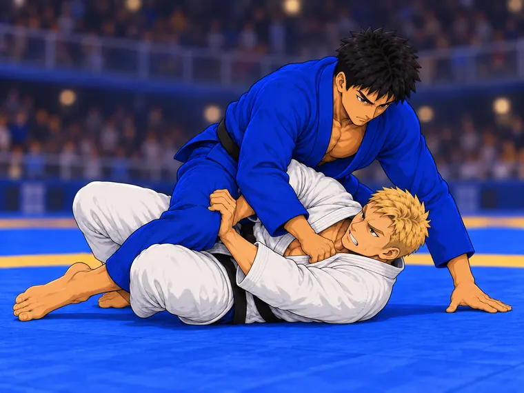
Half Guard Player
Lives under the knee shield. Underhooks, old school sweeps and deep half.
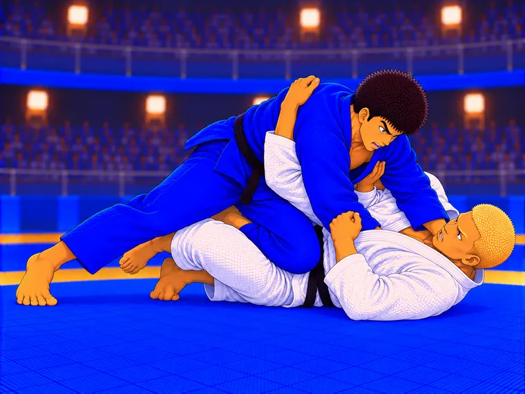
Pressure Passer
Grinds through the guard, pins and climbs to mount.
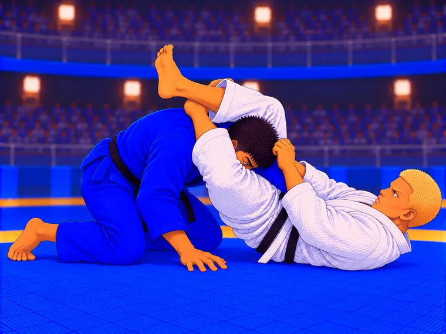
Leg Locker
Entangles the legs from SLX, K guard and the saddle. The big leg locks open up at brown belt, like in IBJJF rules.
From white belt to black belt
Belts are a curriculum, not a power boost. A higher belt doesn't hit harder. It knows more techniques and reads the fight better.
What changes as you rank up
- New techniques. Each card has a minimum belt. White belt starts with the essentials: guard pull, scissor sweep, knee slice, armbar, rear naked choke. Advanced guards and finishes unlock later.
- Read the fight. When you draw, you look at the top cards of your deck and keep the first one that fits the position. White belts see 2 cards; brown and black belts see 5.
- Real rule sets. Heel hooks, kneebars and calf slicers wait until brown belt, following IBJJF rules for which techniques are legal at each belt.
Road to Black Belt
The adventure mode. Beat one opponent at a time, each with their own habits. Every win earns a stripe, and the last fight of each section is your belt test.
- Read the tells. Before each round your opponent shows what they're about to try: dropping levels for a takedown, hugging a leg. Early in the match the tells are honest. Later, the tough ones start faking.
- Signature meter. Stop their attack with the right card and your meter fills, unlocking special moves.
- Reward cards for each belt test, legends after black belt, and a few secrets along the way.
Road to Black Belt: you know these people
Every jiu-jitsu journey has the same cast. The gym bro who goes 100%, the kid who lives upside down, the old guy nobody can pass. In Road to Black Belt you face them one at a time, read their tells, earn your stripes and pass your belt tests.
White belt
The first year: everyone is stronger, faster or weirder than you.
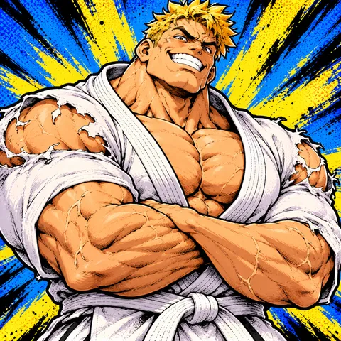
Gym Bro Brad
Benches twice his body weight. Goes 100% from the first grip and gasses out ninety seconds later.
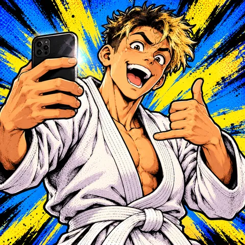
YouTube Yuri
Tried a berimbolo before he learned to shrimp. Sometimes it even works.
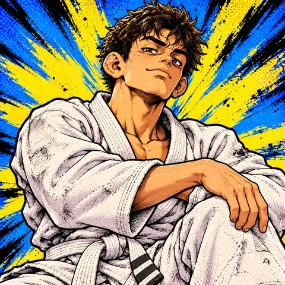
The Coach's Nephew
Fourteen years old, ten years of training. Closed guard, armbar, triangle, repeat.
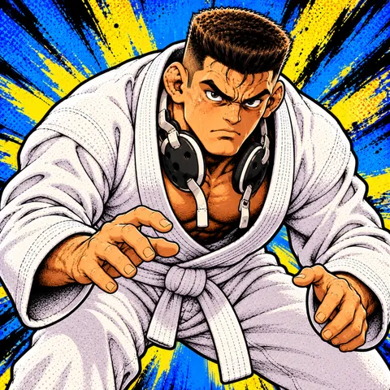
Belt testThe Wrestler
State champion, brand new to the gi. You will get taken down. The question is where you land.
Blue belt
You know enough to get in trouble. So do they.
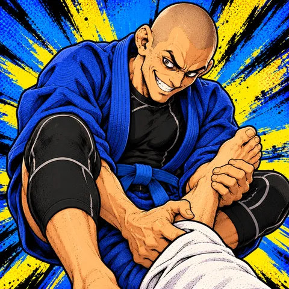
Leg Lock Lenny
Watched every leg lock instructional twice. You shake hands and he's already sitting on your foot.
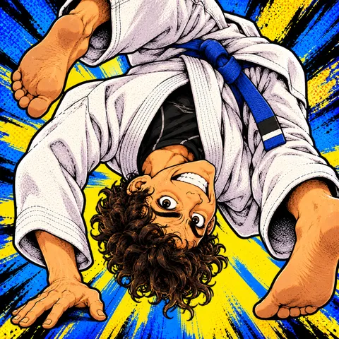
The Berimbolo Kid
Made of rubber. Spends more time inverted than standing.
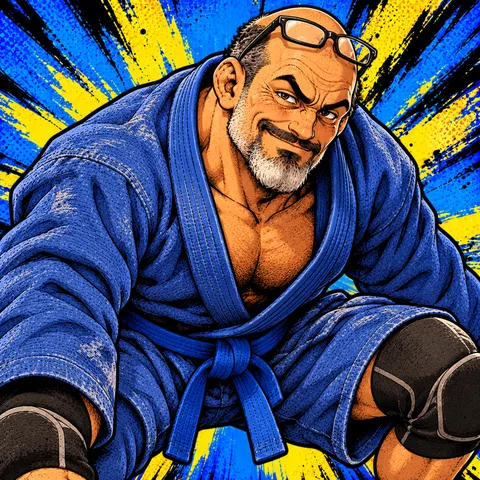
Half-Guard Hank
Bad knees, unbeatable half guard. He'll old-school sweep you and smile about it.
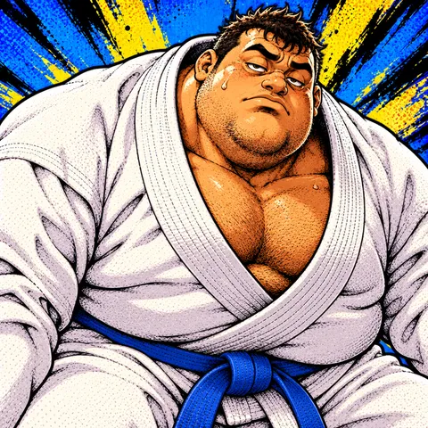
Belt testPressure Pete
Heavy, slow and impossible to move. Like being under a fridge that wants your arm.
Purple belt
Everybody has a game now, and they've seen yours.
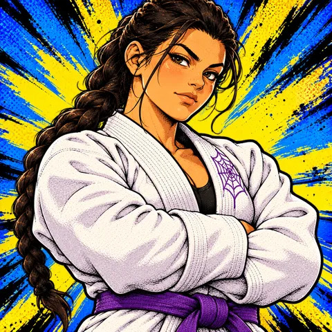
Spider Sofia
Wraps your arm in her lasso and waits. Every time you post, you go over.
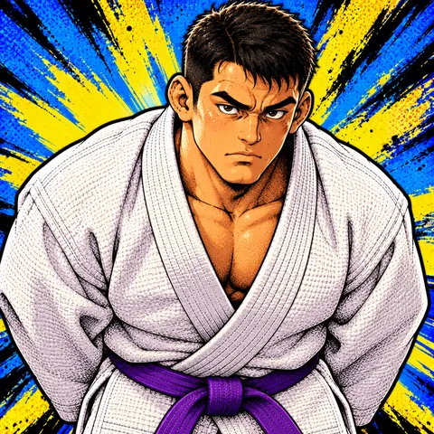
The Judoka
Grabs your collar. Next thing you see is the ceiling.
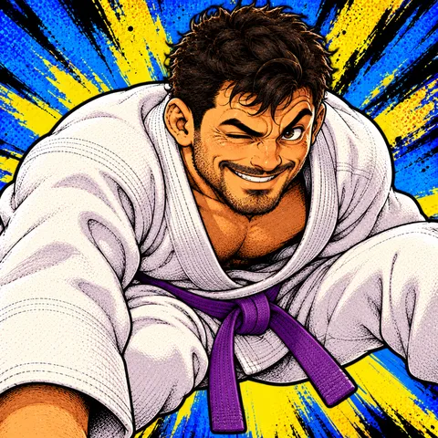
Deep Half Diego
You were on top. Were.
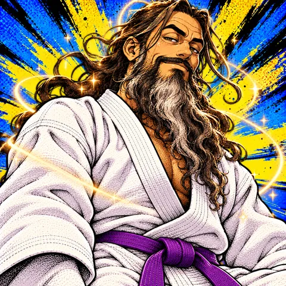
Belt testThe Guard Wizard
A sweep for every grip, a submission for every sweep. You're always one step behind.
Brown belt
The last stretch. The legs are fair game now.
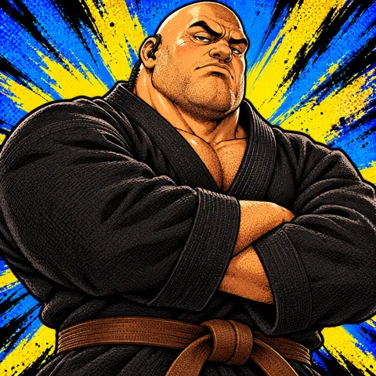
The Bouncer
Two hundred sixty pounds of side control. He doesn't do much. He doesn't need to.
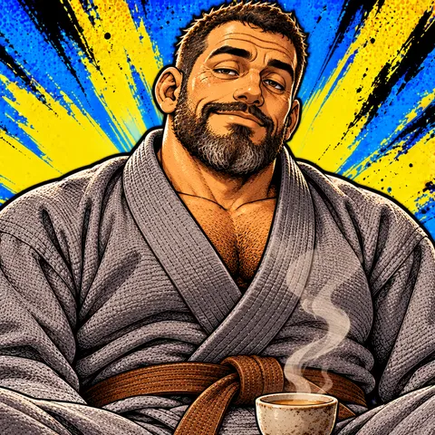
Saddle Sergei
The calmest man in the gym. Enters the saddle and waits for you to panic.
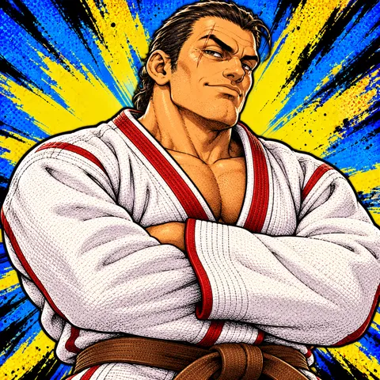
Coach's Rival
Your coach still won't say his name. Wrestles hard and goes straight for the back.
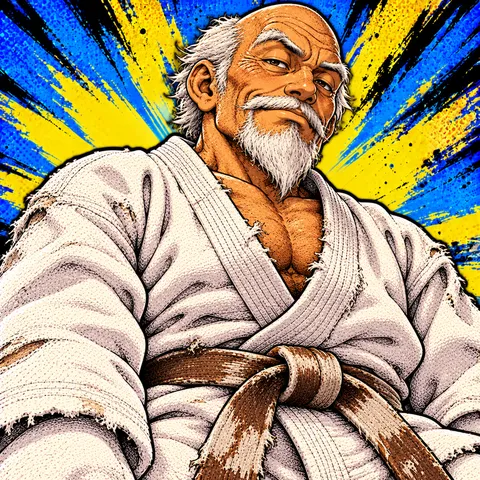
Belt testO Velho
A tiny old master who never gets tired. He doesn't use strength, so yours doesn't matter.
Legends
Black belt isn't the end of the road.
? ? ?
Once he grabs your wrist, it's already over.
? ? ?
He crossed the world taking challenge matches. Earn your black belt to meet him.
All characters are fictional. Any resemblance to your training partners is completely on purpose. And there are a few secrets along the way that we're not telling you about.
How it helps you learn jiu-jitsu
Mat Cards was designed by a jiu-jitsu practitioner to think about the game the way coaches teach it: positions first, then the techniques that live in each one.
Think in positions
A card only works from the right place. You start to see jiu-jitsu as a map: what can I do from here, and where does it take me?
Learn the chains
Real combinations are built in. Fail a hip bump and the kimura opens up. Push on someone in mount and the armbar gets easier. Grip fight inside the closed guard and your arms are exposed to the triangle.
Respect the landing
Techniques don't always land you where the textbook says. Sweeps usually end in half guard. Passes often end with the opponent turning to turtle. You learn what to do next.
Know the vocabulary
Over 140 real techniques and 26 positions, from closed guard to the truck, with the names you'll hear in class.
Pace yourself
The gas tank rewards what good rollers do: stay efficient early, then turn up the pressure in the final minute.
Learn the rules
IBJJF points, why reversals from mount aren't sweeps, and which submissions are legal at each belt. Useful before your first competition.
What actually happens in competition
The odds in Mat Cards were tuned against match statistics from top-level competition. Here's what the data shows, and how the game reflects it.
of submissions at the 2023 IBJJF Worlds (quarterfinals to finals) were chokes from the back. Armbars came second, triangles third.
IBJJF Worlds black belt finals from 2016 to 2019 ended by submission. Most others were decided on points or advantages.
At ADCC 2022, every back take led to a win, and so did every mount.
Guard pulls vs takedowns at ADCC 2024. Getting the fight to the ground is a battle of its own.
The transitions you'll see most
These are the landing odds in the game when a technique works. They follow how these techniques usually end in real matches: most sweeps and takedowns land in half guard, and the opponent often turns to turtle to stop a pass.
Where the game is different on purpose
Submissions finish about half of Mat Cards matches, more than at the elite level. That's a choice: it feels more like a good roll at your gym than a tight world-championship final decided by one advantage.
Sources: IBJJF, 2023 World Championships submission breakdown · FloGrappling, IBJJF Worlds finals 2016–2019 · BJJ Heroes, ADCC 2022 statistics · BJJ Heroes, ADCC 2024 statistics
26 positions to fight from
From standing to the truck. Each position gives the top and bottom player different odds and different options.
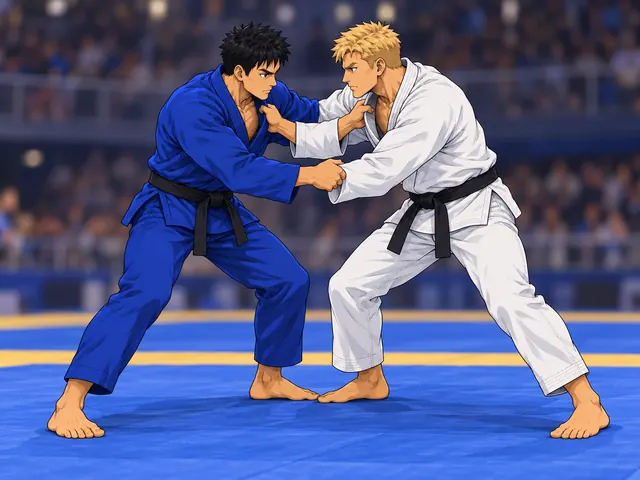
Standing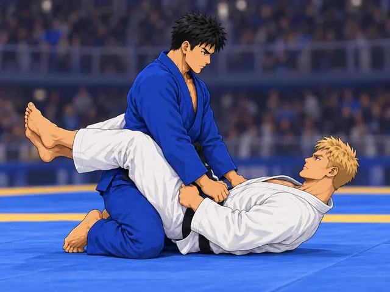
Closed Guard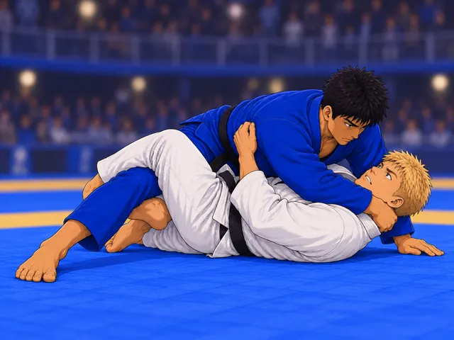
Half Guard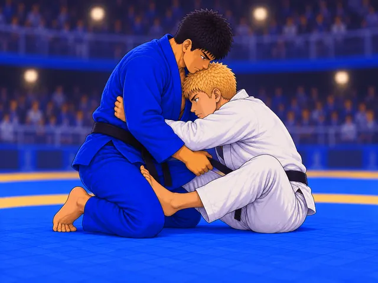
Butterfly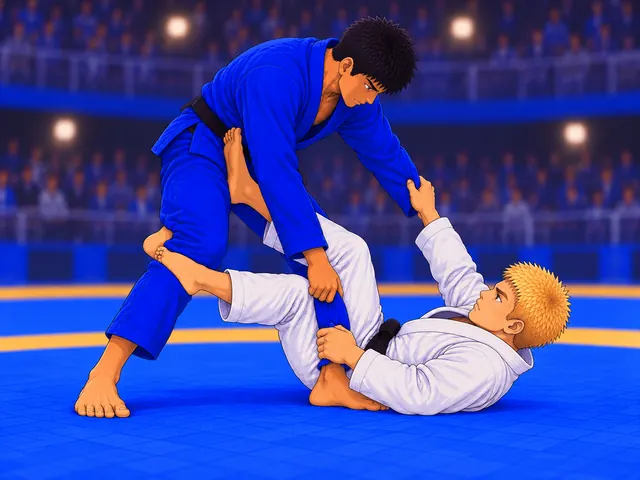
De La Riva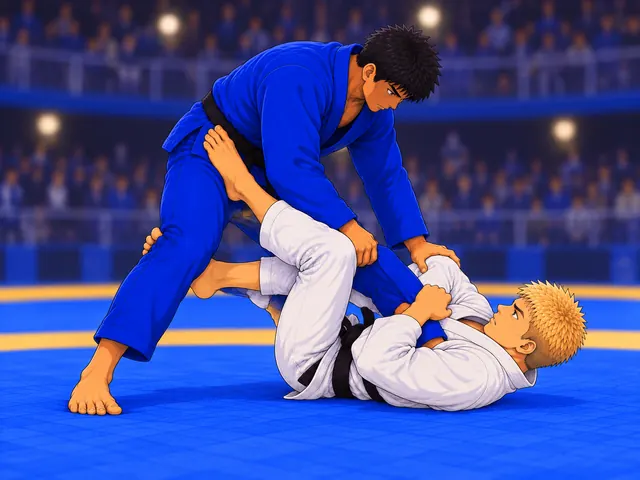
X Guard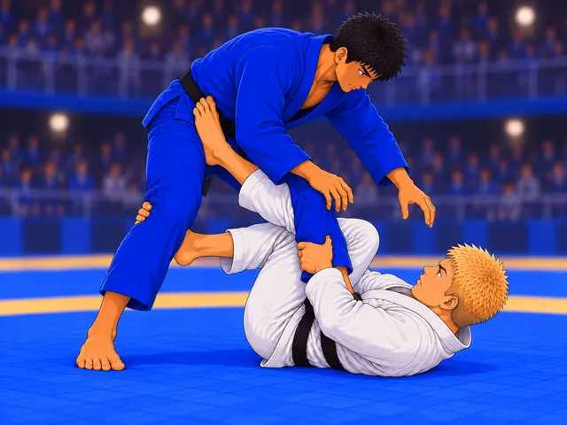
Single Leg X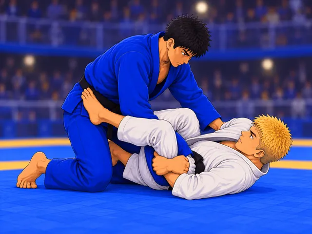
K Guard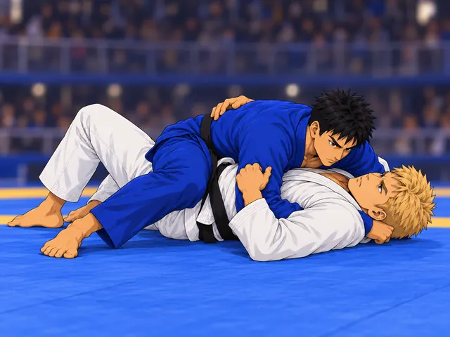
Side Control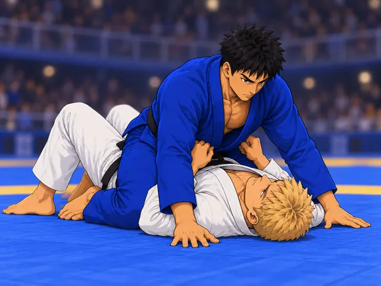
Mount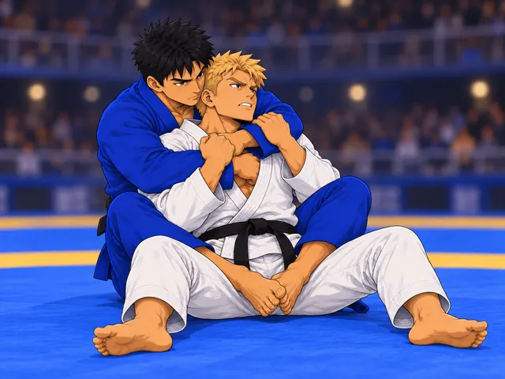
Back Control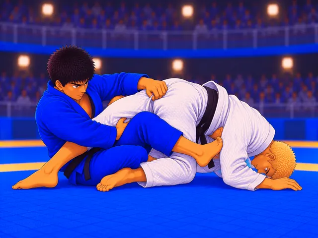
The TruckMore rule sets on the way
Mat Cards launches with gi jiu-jitsu under IBJJF-style rules. The engine is built so new rule sets and techniques can be added over time.
ADCC rules
Submission grappling: takedowns rewarded, guard pulls penalized, and the full leg lock game.
No-Gi
No collar or sleeve grips. Underhooks, wrist control and more heel hooks.
Judo
Throws, ippon and the battle for grips, with a short window for groundwork.
MMA
Strikes join the deck. Get the takedown without eating an uppercut.